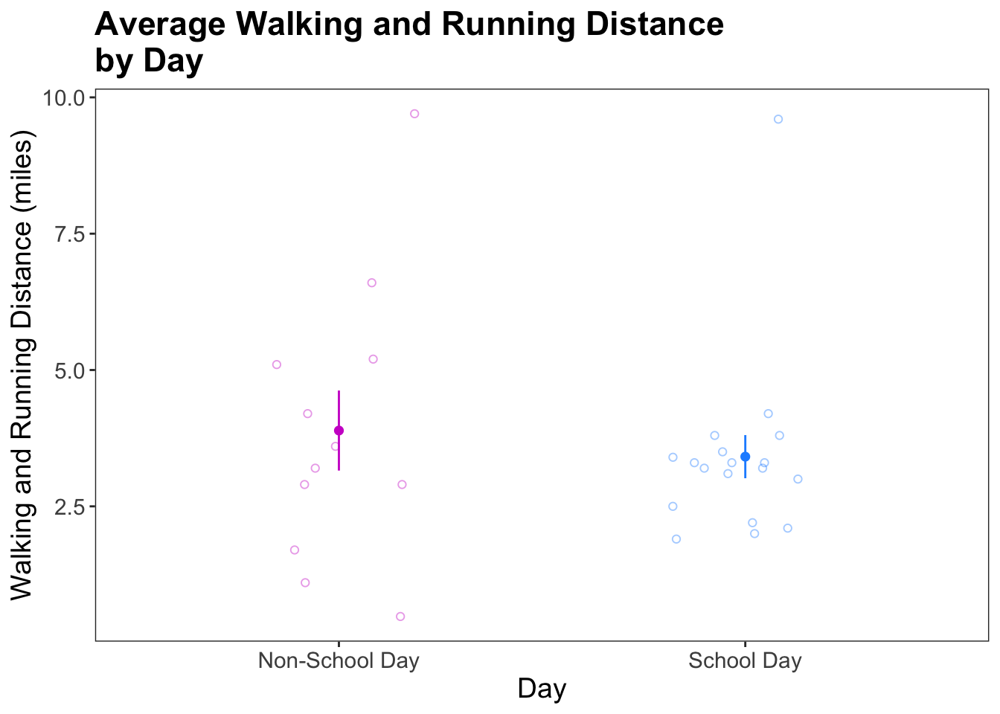

library(tidyverse)
library(ggplot2)
library(flextable)
library(gt)
library(here)
library(janitor)
library(readxl)ENVS-193DS_homework-03
Part 1. Set up tasks
Part 2. Problems
Problem 1. Personal Data
a. Data Summarizing
I could calculate the mean walking and running distance to compare between school days and non-school days, because I suspect that I walk more on school days due to commuting between classes and other campus activities. This comparison would help show how my routine affects my physical activity levels.
b. Visualization
personal_data <- read_csv(here("data", "[ENVS 193DS] Personal Data - Samantha Ross - Sheet1 (1).csv")) # storing personal data as an object called personal_data
#cleaning data
personal_data_clean <- personal_data |> #creating a clean data frame
clean_names() |> # cleaning column names
mutate(school_day = as_factor(school_day),
school_day = fct_relevel(school_day,
"no",
"yes"), # making sure that school_day is a factor and ordering levels
school_day = case_when(
school_day == "yes" ~ "School Day",
school_day == "no" ~ "Non-School Day"
)) |> # replacing the values in the school_day column so that "yes" is now "School Day" and "no" is now "Non-School Day"
select(school_day, walking_and_running_distance_miles) # selecting columns of interest
#summarizing data
personal_data_summary <- personal_data_clean |> # starting with the clean data frame
group_by(school_day) |> # group by school day
summarize(mean = mean(walking_and_running_distance_miles), # calculate mean miles walked/ran
n = length(walking_and_running_distance_miles), # calculate the number of observations per type of day (sample size)
sd = sd(walking_and_running_distance_miles), # calculate the standard deviation
se = sd/sqrt(n), # calculate the standard error
ci = mean_cl_normal(walking_and_running_distance_miles) # calculate the confidence interval
) |>
unnest_wider(ci) # split the CI column into ymin and ymax
# display personal_data_summary
personal_data_summary# A tibble: 2 × 8
school_day mean n sd se y ymin ymax
<chr> <dbl> <int> <dbl> <dbl> <dbl> <dbl> <dbl>
1 Non-School Day 3.89 12 2.54 0.734 3.89 2.27 5.51
2 School Day 3.41 18 1.68 0.396 3.41 2.58 4.25# base layer: ggplot
ggplot(data = personal_data_clean, # starting data frame
aes(x = school_day, # x-axis
y = walking_and_running_distance_miles, # y-axis
color = school_day)) + # coloring by school day
# first layer: jitter plot
geom_jitter(height = 0, # making sure points don't move along y-axis
width = 0.2, # narrowing width of jitter
alpha = 0.4, # make the points more transparent
shape = 1) + # make the points open circles
# second layer: showing the summary (mean and standard error)
geom_pointrange(data = personal_data_summary, # using the personal_data_summary data frame
aes(x = school_day, # x-axis
y = mean, # y-axis
ymax = mean + se, # upper bound of standard error
ymin = mean - se), # lower bound of standard error
size = 0.25) + # changing the size
# customization
scale_color_manual(
values = c(
"School Day" = "dodgerblue",
"Non-School Day" = "magenta3")
)+ # changing the colors from default
labs(
title = "Average Walking and Running Distance\nby Day", # adding a title
x = "Day", # changing the name of the x-axis
y = "Walking and Running Distance (miles)" # changing the name of the y-axis
) +
theme_bw() + # changing theme from default
theme(
panel.grid = element_blank(), # removing the grid
plot.title = element_text(face = "bold"), # making the title bold
panel.background = element_blank(), # making the background white
text = element_text(size = 14), # making the text larger
legend.position = "none" # taking out the legend
)
c. Caption
Figure 1. Comparison of average walking and running distance (miles) ± standard error (SE) by school day (n = 18) and non-school day (n = 12) sites. Open circles represent an individual day. Filled circles with error bars indicate the mean ± standard error for each type of day. Data from Samantha Ross.
d. Table presentation
personal_data_summary |> # starting data frame
select(!c(n, y)) |> # exclude n and y columns
rename(
"Mean" = mean,
"Day" = school_day,
"Standard deviation" = sd,
"Standard error" = se,
"95% CI Lower" = ymin,
"95% CI Upper" = ymax
) |> # renaming columns
gt() |> # gt call
tab_header(
title = "Summary of Walking and Running Distance by Day"
) |> # adding a title
fmt_number(
columns = where(is.numeric),
decimals = 1
) # rounding all numbers to one decimal point| Summary of Walking and Running Distance by Day | |||||
|---|---|---|---|---|---|
| Day | Mean | Standard deviation | Standard error | 95% CI Lower | 95% CI Upper |
| Non-School Day | 3.9 | 2.5 | 0.7 | 2.3 | 5.5 |
| School Day | 3.4 | 1.7 | 0.4 | 2.6 | 4.2 |
Problem 2. Affective visualization
a. Describe in words what an affective visualization could look like for your personal data
An affective visualization of my personal data could take the form of a flowing landscape painting, where the height of hills and valleys represents the distance I walked or ran each day, and the colors of the sky reflect my level of activity. For example, tall peaks on school days could symbolize high activity, while flatter areas on non-school days show rest and stillness. The color palette could shift from cool blues for calm, low-activity days to warm reds for energetic, active days. Rather than just presenting information, the piece would evoke the rhythms and emotions of my daily life, making the data feel more personal.
b. Create a sketch (on paper) of your idea
c. Make a draft of your visualization
d. Write an artist statement
Problem 3. Statistical critique
a. Revisit and summarize
The authors are addressing if participation in an agroforestry development program impact farmer’s self-efficacy, attitudes, and intentions to adopt or maintain agroforestry. They are also testing which variables - such as self-efficacy, socio-economic factors, and attitudes - significantly predict the intention to adopt or maintain agroforestry. Student’s t-tests are included in this paper to determine if there were any significant differences between the agroforestry development program participants and non-participants. The response variables are scores on indices and scales for self-efficacy, attitudes and intentions to adopt and maintain agroforestry in Southern Bahia, Brazil. The predictor variable is participation in the agroforestry development program (yes/no).

b. Visual clarity
The table is clear in showing which variables were tested and the resulting p-values, but it lacks key context and descriptive statistics that would help readers fully interpret the findings. For example, we know that program participation did not contribute significantly to farmers’ intentions to adopt and maintain agroforestry, but we do not know what their intentions were. This could be improved by displaying the mean scores.
c. Aesthetic clarity
The layout of the table is clean and minimal. The heavy border between the top row and the rest of the rows makes it clear what the column name is. They include an asterisks next to P-value to reference the alpha level in the footnote to make the significance level clear for readers.
d. Recommendations
To make this table better, I recommend adding two additional columns - “Mean (Participant Group)” and “Mean (Non-Participant Group). P-values alone do not tell us how large or small the differences were between participants and non-participants. Including the mean scores for each group and their standard deviations would allow readers to interpret the direction and magnitude of differences, and understand the farmers’ attitudes toward agroforestry. I would also make the footnote (where the alpha value is displayed) bold, so that readers do not miss it.